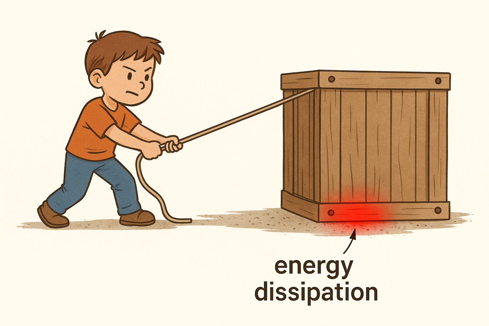

Not all forces conserve energy. When non-conservative forces like friction, thrust, or drag do work on a system, the total mechanical energy changes. This leads to one of the most important energy equations:
\( W_{\text{non-cons}} = \Delta E = E_f - E_i = (K_f + U_f) - (K_i + U_i) \)
Work done by non-conservative forces equals the change in mechanical energy.
If a force causes a gain or loss in mechanical energy (kinetic + potential), it is doing **non-conservative work**. The total mechanical energy is no longer constant:
\( E_i + W_{\text{non-cons}} = E_f \)
Initial energy plus work done = final energy
Problem: A box slides 5 m across a rough surface with friction force of 4 N. It starts at 10 m/s and ends at 6 m/s. Find the work done by friction and verify energy loss.
Step 1: Find initial and final kinetic energies:
\( K_i = \frac{1}{2}mv_i^2 = \frac{1}{2}m(10)^2 = 5m \cdot 10 = 50m \)
\( K_f = \frac{1}{2}mv_f^2 = \frac{1}{2}m(6)^2 = 5m \cdot 3.6 = 18m \)
Step 2: Calculate work done by friction:
\( W = Fd \cos(\theta) = 4 \cdot 5 \cdot \cos(180^\circ) = -20 \ \text{J} \)
Step 3: Use conservation with work:
\( W_{\text{friction}} = K_f - K_i = -20 = 18m - 50m = -32m \Rightarrow m = \frac{20}{32} \approx 0.625 \ \text{kg} \)
✅ Final Answer: Friction did –20 J of work, reducing mechanical energy.